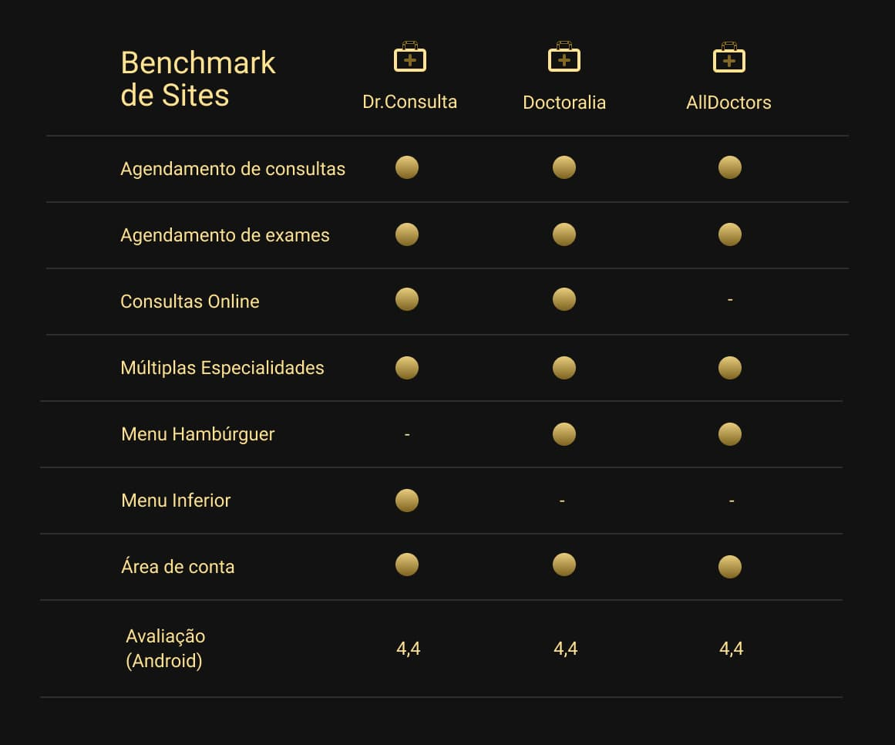
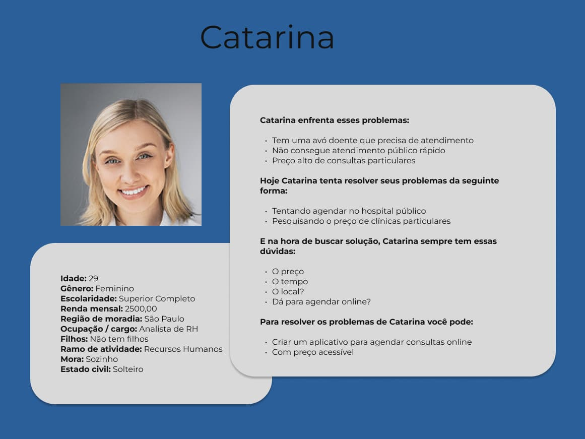
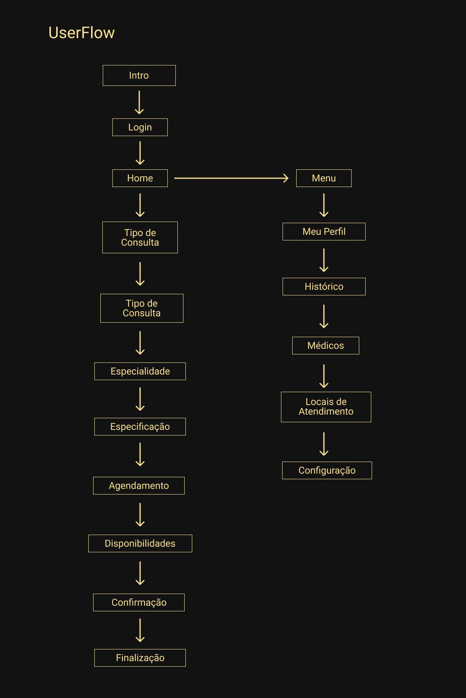
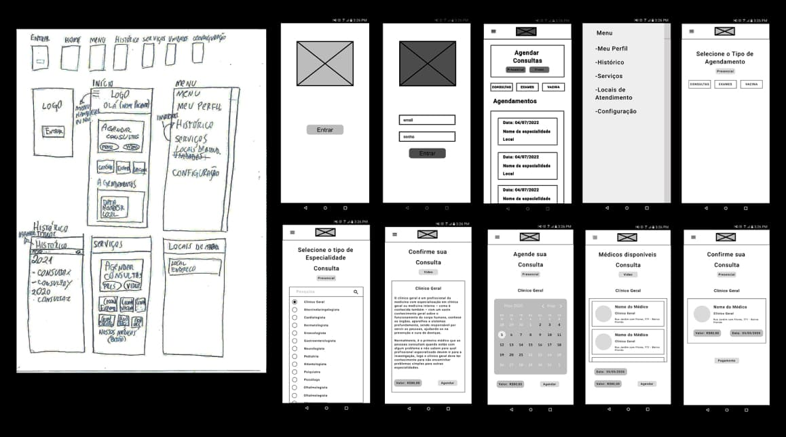
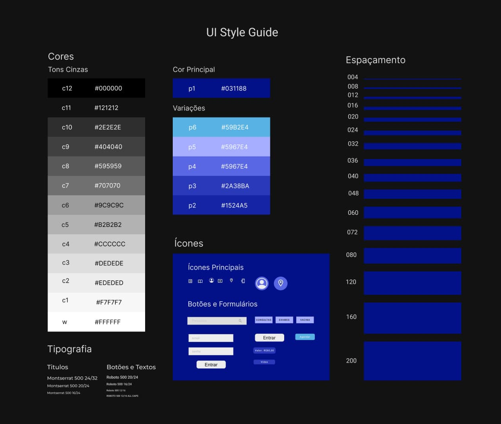

Dr. Michelangelo

Dê uma olhada no Protótipo
A ideia
É um aplicativo de Android fictício, com o objetivo de desenvolver um sistema integrado com médicos conveniados e hospitais. Para os usuários conseguirem marcar exames e consultados pelo app de forma simples e rápida. Tendo a opção também para empresas B2C, onde as empresas cadastrariam seus funcionários e eles teriam direito através de uma mensalidade.
Método
.jpg)
O método de desenvolvimento usado foi o Design Thinking, sendo uma metodologia que permite a criação de soluções inovadoras e diferenciadas, aplicáveis. Para qualquer tipo de problema, desde questões empresariais até problemas sociais.
As etapas do Design Thinking são interconectadas e iterativas. O que significa que a equipe pode passar de uma fase para outra e voltar atrás se necessário. As cinco etapas do Design Thinking são Empatia, Definição do Problema, Ideação, Prototipagem e Teste.
Etapas e suas entregas
Empatia
A primeira fase do Design Thinking é a Empatia, que é o processo de entender o usuário e suas necessidades. Nesta fase, a equipe deve realizar pesquisas e entrevistas com usuários. Observar seus comportamentos e identificar suas necessidades, desejos e desafios. Esta fase é crucial para a compreensão do problema. E para a criação de soluções que atendam às necessidades reais do usuário.
Neste projeto será usado a Matriz CSD, para fazer levantamentos e fazer um plano de ação para os primeiros passos. Logo após os direcionamento decidido, será necessário fazer uma pesquisa e a criação de uma persona, pera reforçar quais são os problemas a serem resolvidos com este aplicativo.
Definição do problema
Após a fase de Empatia, a equipe deve definir o problema a ser resolvido. Nesta fase, a equipe deve analisar todas as informações coletadas durante a fase de Empatia. E identificar as necessidades e desejos mais importantes dos usuários. É importante definir o problema de forma clara e concisa, para que a equipe possa se concentrar na solução correta.
Ideação
A terceira fase do Design Thinking é a Ideação, que é o processo de gerar ideias para resolver o problema. Nesta fase, a equipe deve se concentrar em gerar uma grande quantidade de ideias. Sem se preocupar com a sua viabilidade ou implementação. O objetivo é criar um ambiente livre de julgamentos e incentivar a criatividade.
Prototipagem
O objetivo da fase de Prototipagem é testar as soluções para identificar possíveis problemas e refiná-las antes da implementação.
Algumas das técnicas utilizadas na fase de Prototipagem incluem a criação de protótipos de papel, que são representações simples da solução em papel. E a prototipagem rápida, que é uma técnica para criar protótipos de baixa fidelidade rapidamente
Protótipos de Baixa, Média e Alta fidelidade serão usados no desenvolvimento.
Teste
Processo de testar os protótipos com os usuários reais dentro do público alvo e obter feedback para aprimorar a solução.
Etapa 1 - Empatia
O Começo das Ideias
Para entender melhor as necessidades do cliente e quais caminhos tomar, foi usada a Matriz CSD, como ponto de partida do projeto.

A partir desse levantamento, pôde-se elaborar um plano de ação inicial.
.jpg)
Benchmark
Para entender melhor o que a concorrência estava fazendo, foi feito uma pesquisa de Benchmark e essa pesquisa, baseada no aplicativos concorrentes, sendo eles o Dr.Consulta, o Doctoralia e o AllDoctors, que nos mostrou alguns pontos em comum, que foram usados para o desenvolvimento do aplicativo.
Pesquisa
Foi feita uma pesquisa de concorrência na PlayStore, para entender um pouco melhor o que o público desses aplicativos pensa deles
Dr. Consulta
.jpg)
Doctoralia
.jpg)
AllDoctors
.jpg)
Persona
Entendendo um pouco do público alvo, à partir de pesquisas e da análise da concorrência, foi desenvolvida um persona, como representação de um desses público, ajudando no desenvolvimento do produto, mantendo o foco no cliente.
Lembrando que foi encontrado mais de um público, sendo eles pacientes de classe C, D e E e Médicos de várias especialidades.
Etapa 2 - Definições dos Problemas
Nas pesquisas com os aplicativos é possível notar uma certa dificuldade dos usuários em executar algumas tarefas simples, ou problemas técnicos do aplicativo, que não é ajustado para smartphones mais antigos, dando problemas como travamentos, telas pretas, falhas prejudicando muito a experiência do usuário. O pior caso foi quando o aplicativo não conseguiu fazer o que prometia, cobrou a consulta e não agendou a consulta. Problemas assim, podem ser resolvidos com telas de confirmação, notificações de cancelamento e sincronização de banco de dados financeiros para agilizar devoluções, etc.
Observando todo esse cenário da concorrência, é possível ver que o grande problema essas pessoas tem é agendar uma consulta de maneira prática, rápida e simples.
Com isso é possível desenvolver um aplicativo que resolva esse problema.
Etapa 3 - Ideação
Fluxo
Começando pela Intro, a tela de entrada, que leva para a segunda é tela de login, que vai até a Home, onde o usuário terá acesso ao Menu hambúrguer e a uma área de agendamento.
No menu Hambúrguer, existem 5 opções, Meu Perfil, Histórico, Serviços, Locais de Atendimento e Configuração, que levam para páginas de mesmo nome, para ajustes e configurações.
Para agendar uma consulta, existem três opções: escolhendo pelo tipo de agendamento (presencial ou vídeo) na página principal ou escolhendo diretamente se quer uma consulta, um exame ou uma vacina.
Para continuar o agendamento, você é enviado para uma página de Escolha de especialidade ou tipo de exame/vacina, segundo para uma página de confirmação, que tem informações sobre o exame, consulta ou vacina, continuando no aplicativo, existe uma página de escolha de data, segundo para uma página de escolha de médico ou local do exame, prosseguindo até a confirmação da consulta e por fim, a finalização da mesma.
Com a imagem abaixo, é possível ver o fluxo do aplicativo, desde página de entrada (á esquerda), a página home (página 3), o menu hambúrguer (toda fileira à direita) e as páginas de agendamentos que seguem para baixo.
Etapa 4 - Prototipagem
Foi criado um site para atender as necessidades do cliente, sendo desenvolvido, a partir da análises do benchmark e das pesquisas. Foi criada um mapa do site e futuramente um Wireframe de baixa e média resolução.
Com o desenvolvimento da ideia, houve algumas mudanças, como a definição do uso do menu hambúrguer, o uso do logo em todas as telas, a escrita de alguns títulos, entre outras mudanças.
Cores e Tipografia
As cores foram escolhidas para combinar com o logotipo da empresa. Já a tipografia, foram escolhidas as Fontes Montserrat e Roboto. Montserrat para títulos e Roboto para textos. As cores escolhidas foram tons de azul e tons de cinza.
Resultado Final
.jpg)
Conclusão
De acordo com as pesquisas, as pessoas que mais usam esse aplicativo são médicos e pacientes, que parecem ser sua maioria, portanto o aplicativo precisa ser o mais simples possível.
Foi desenvolvido com uma tela de login/cadastro, uma Home, Menu e Agendamento, de exames, consultas e vacinas.
O aplicativo ainda precisa passar por testes, para realmente se adequar melhor às necessidades do público, lembrando que é necessário tentar analisar a possibilidade fazer um aplicativo leve e verificar com o público se é realmente simples de usar, pois se houver muita burocracia, pode causar a desistência do agendamento e até do uso do aplicativo.